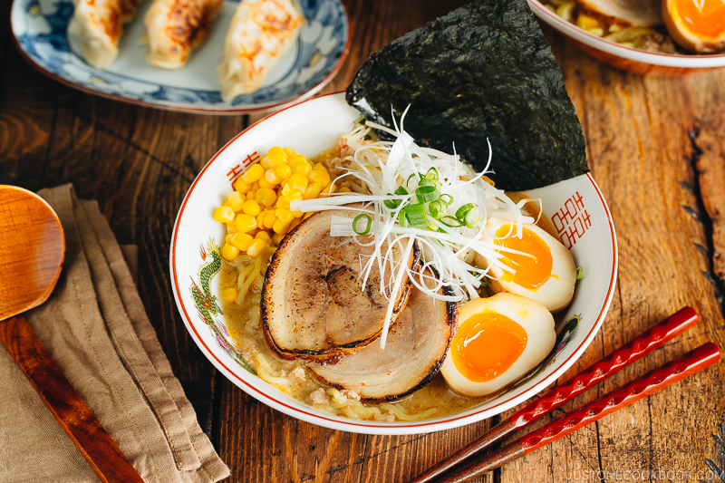

HOME
Miso-Ramen 味噌ラーメン

Description
Flavored with pork and chicken broth with a mix of toppings such as chashu and ramen egg, this bowl of Miso Ramen is going to satisfy your craving. You can make delicious ramen with authentic broth in less than 30 minutes!
Ingredients
For the Ramen Soup:
- ¼ tsp white pepper powder
- 2 cloves garlic (1½ tsp minced garlic)
- 1 knob ginger (½ tsp grated ginger)
- 1 shallot
- 1 Tbsp toasted white sesame seeds
- 1 Tbsp roasted sesame oil
- 113 g ground pork
- 1 tsp doubanjiang (spicy chili bean sauce/broad bean paste) (you can buy a non-spicy version online)
- 3 Tbsp miso (each miso brand/type makes a slightly different broth)
- 1 Tbsp sugar
- 1 Tbsp sake
- 960 ml Chicken Stock/Broth (homemade or store bought) (each ramen bowl requires about 1½ cups (360 ml) of broth + a bit more for evaporation)
- 1 tsp kosher or sea salt (I use Diamond Crystal; use half for table salt) (adjust according to your chicken broth)
For the Ramen and Optional Toppings:
- 2 servings fresh ramen noodles (10-12 oz or 283-340 g fresh noodles; 6.3 oz or 180 g dry ramen noodles; for gluten-free, use these GF ramen noodles)
- Chashu (homemade or store bought)
- spicy bean sprout salad (or blanched bean sprouts)
- ramen egg (ajitsuke tamago)
- frozen or canned corn (drained)
- nori (dried laver seaweed) (cut a sheet into quarters)
- green onion/scallion (chopped)
- shiraga negi (julienned long green onion)
For the Table (Optional):
- la-yu (Japanese chili oil)
- pickled red ginger (beni shoga or kizami beni shoga)
- white pepper powder
Steps
To prepare the ramen soup:
- Mince the garlic (I use this garlic press) and ginger (I use this ceramic grater).
- Mince the shallot. Set these three prepared ingredients aside.
- Grind the sesame seeds, leaving some seeds unground for texture.
- In a medium pot, heat the sesame oil over medium-low heat and add the minced garlic, ginger, and shallot.
- With a wooden spatula, stir fry until fragrant.
- Add the meat and increase heat to medium. Cook the meat until no longer pink.
- Add the spicy bean paste (la doubanjiang) or non-spicy bean paste (doubanjiang) and miso. Quickly blend well with the meat before they get burnt.
- Add the ground sesame seeds and sugar and mix well.
- Add the sake and chicken stock and bring the mixture to a simmer.
- Taste your soup and add salt (if necessary) and white pepper. Each brand of chicken stock varies in saltiness, so you will have to taste your soup to decide how much salt to add.
- Cover with the lid and keep the ramen soup simmering while you cook the noodles.
To prepare the ramen soup:
- Bring a large pot of unsalted water to a boil (ramen noodles already include salt in the dough). When the water is boiling, ladle some hot water into the serving bowls to warm them up. Meanwhile, gently shake the fresh noodles with your hand to separate and loosen them up.
- Important: Prepare the toppings ahead of time so you can serve the hot ramen immediately. For toppings, I use chashu, ramen egg, blanched bean sprout (or spicy bean sprouts), corn kernels, shiraga negi, chopped green onion, and a sheet of nori. Prepare a small dish of red pickled ginger, a bottle of la-yu (chili oil), and some white pepper powder on the table.
- Cook the noodles according to the package instructions. I usually cook the noodles al dente (about 15 seconds less than the suggested cooking time). Before your noodles are done cooking, empty the hot water from the warmed ramen bowls.
- When the noodles are done, quickly pick them up with a mesh sieve and shake out the excess water. You don’t want to dilute your soup, so make sure to drain the water well. Serve the noodles into the warmed bowls.
- Add the ramen soup and top with the various toppings you’ve prepared.
- Place the toppings of your choice on top of the noodles and serve immediately